Yellowstone
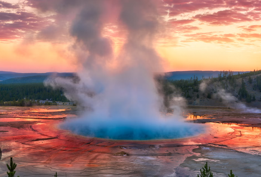
Yellowstone National Park is located mainly in Wyoming, famous for its geysers, hot springs and roaming bison.

Yellowstone National Park is located mainly in Wyoming, famous for its geysers, hot springs and roaming bison.
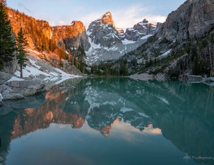
Grand Teton National Park is located in northwestern Wyoming, famous for its jagged mountain peaks and alpine lakes. It's great for hiking, kayaking, and wildlife watching.
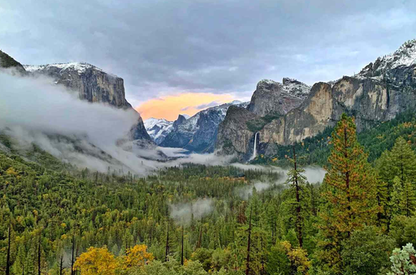
Yosemite National Park is located in California's Sierra Nevada mountains is famous for its towering granite cliffs, giant sequoias, and wildlife such as black bears, mule deer, and coyotes.
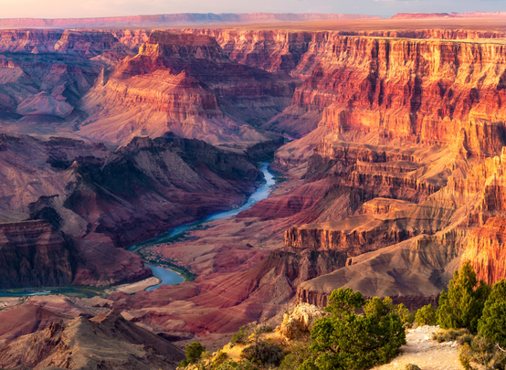
Grand Canyon National Park is located in northwestern Arizona, famous for its massive red rock gorge, layered rock formations. It stretches about 277 miles and is over a mile deep in places.
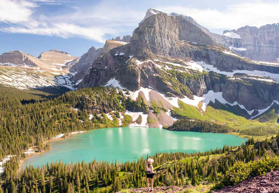
Glacier National Park is located in northwestern Montana, famous for its disappearing glaciers, jagged peaks, glacial lakes and wildflower meadows.
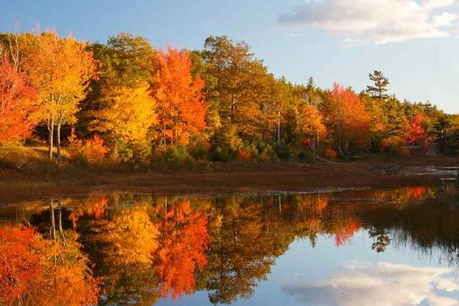
Acadia National Park is located on the coast of Maine is famous for its rocky shoreline, granite peaks and wildlife such as bald eagles and white tailed deer.
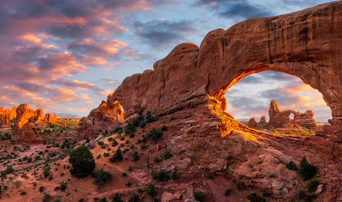
Arches National Park located in eastern Utah is famous for its red rock arches and is home to over 2,000 natural sandstone arches.
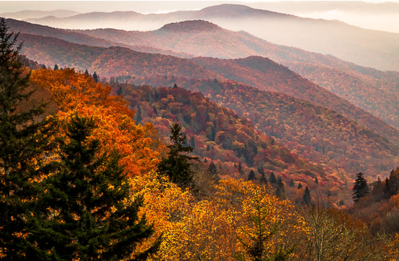
Great Smoky Mountains National Park, located on the border of Tennessee and North Carolina, is famous for its misty blue ridges and lush forests.
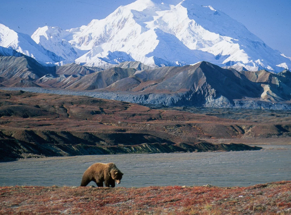
Alaska is home to Denali, the tallest peak in North America at 20,310 feet.
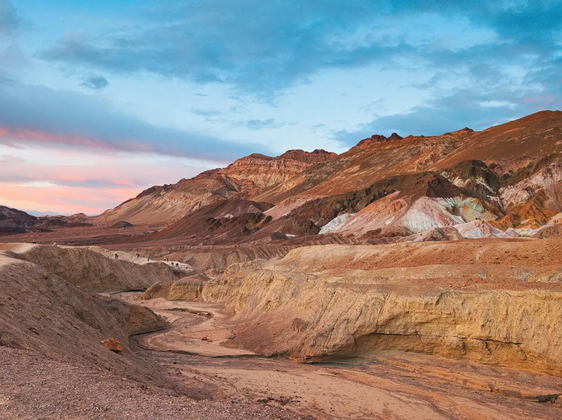
Death Valley is a massive desert basin located in southeastern California known for being the hottest place on Earth. Despite its harsh, arid reputation, the valley contains salt flats, sand dunes, badlands, volcanic craters
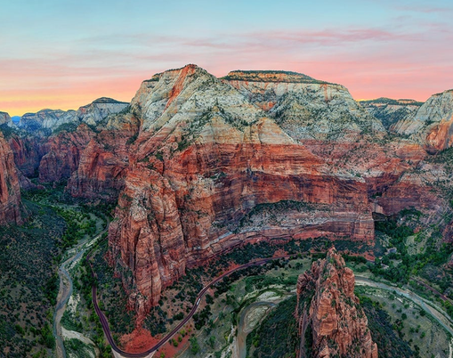
Zion National Park is famous for its towering red sandstone cliffs and narrow slot canyons in Utah.
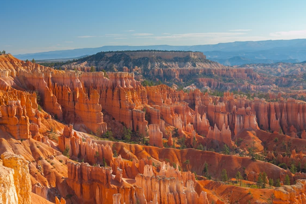
Bryce Canyon National Park in southwestern Utah is most famous for having the largest collection of hoodoos (tall, thin spire shaped rock formations) in the world.
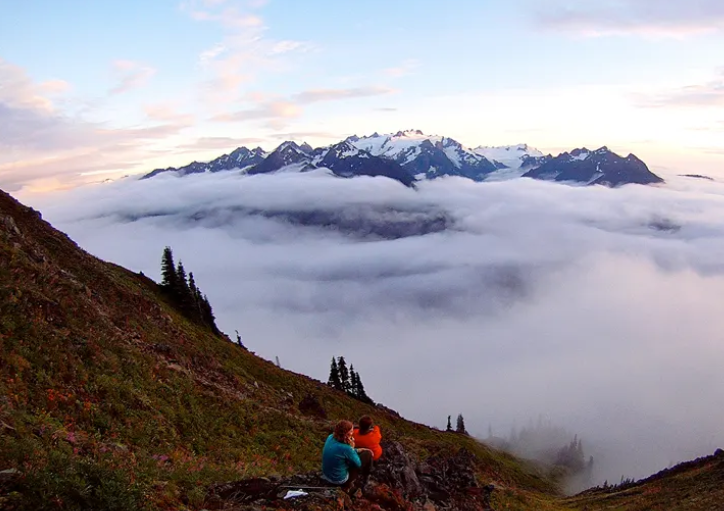
Olympic National Park is described as 'three parks in one', it protects three distinctly different ecosystems: glacier capped mountains, wild Pacific coast, and temperate rain forests.
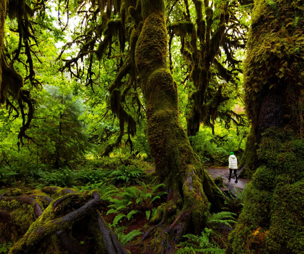
One of the largest temperate rain forests in the U.S., with moss draped trees.
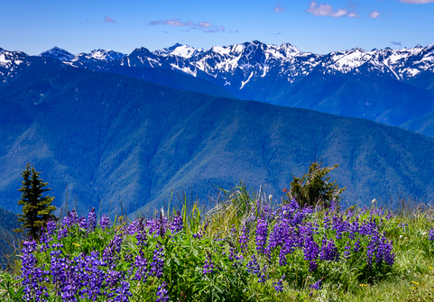
A mountain viewpoint with wildflower meadows and views of the snowy peaks.
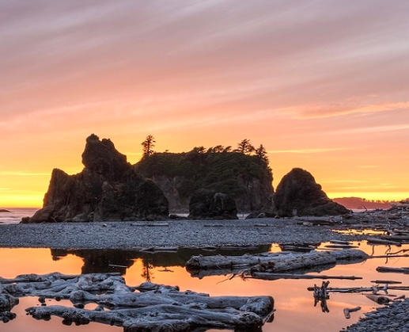
A rugged Pacific beach with sea stacks, driftwood, and tide pools.